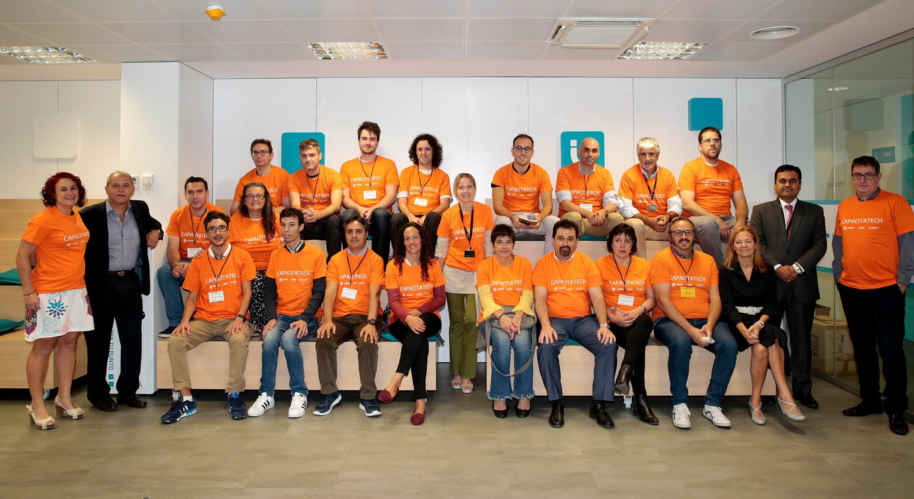

Sobre mi
Antonio Vasile Martin, (Maquetador front-end Junior).
"Si tuviera que describirme en una palabra, esa palabra sería "Creativo" por que es la cualidad que siempre he buscado adquirir". Mi nombre es Antonio tengo 23 años, nací el 1 de Diciembre de 1993 en el norte de Rumania, en la parte de Transilvania. Los primeros 4 años de mi vida crecí rodeado de los hermosos paisajes de mi tierra y los climas frios que a dia de hoy es lo que más echo en falta, al cabo de esos 4 años me mudé a España junto con mi família, donde descubrí una de mis más grandes pasiones: La informática.
Imágenes de Transilvania
Profesión
Soy un maquetador (front-end) de Sitios Web basados en HTML5, CSS3 y JavaScript. Inicié mi carrera en esta profesión durante el año 2017 en un curso implementado por INDRA (CAPACITATECH), donde estuve acompañado de la mano de los mejores profesionales en el sector del diseño y la maquetación web.
